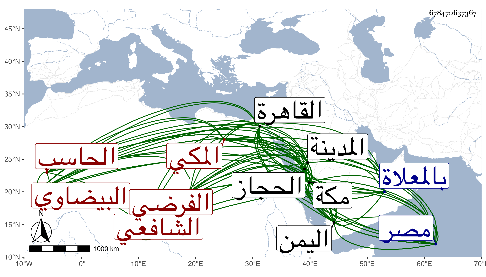

0902Sakhawi.DawLamic.ITO20230111-ara1.EIS1600.678470637367
Biography ID: 678470637367
576
حسين بن علي بن محمد بن داود بن شمس بن رستم بن عبد الله البدر أبو عمر البيضاوي المكي الشافعي الفرضي الحاسب أخو إبراهيم وإسماعيل الماضيين ويعرف بالزمزمي ، ولد في حدود سنة سبعين وسبعمائة وقال شيخنا في أنبائه إنه ولد قبل السبعين بمكة وسمع بها من شيوخها والقادمين إليها وأجاز له ابن النجم وابن الهبل وابن أميلة والصلاح بن أبي عمر والكمال بن حبيب وأخوه البدر حسن وغيرهم وطلب العلم واعتنى بالفرائض والحساب فأخذ ذلك عن الشهاب ابن ظهيرة والبرهان البرلسي الفرضي نزيل مكة وتبصر بهما ثم ازداد فضلا بعد أخذه لذلك عن الشهاب بن الهائم فإنه قرأ عليه بمكة بعض تواليفه ، وأخذ علم الفلك بالقاهرة عن الجمال المارداني ولم يزل في ازدياد ونباهة حتى صار إماما عالما فاضلا ماهرا من أعلم الناس بالفرائض والهيئة والحساب وعلم الخطأين والجبر والمقابلة والهندسة والفلك والتقاويم وانتهت إليه رياسة هذا العلم ببلاد الحجاز مكة والمدينة واليمن وألف فيه وانتفع به أخوه البرهان الماضي في ذلك وحدث باليسير سمع منه الفضلاء كالتقي بن فهد وغيره كل ذلك مع حظ من الدين والعبادة وقدم مصر غير مرة واجتمع بفضلائها وأثنى عليه غير واحد ، وكذا دخل اليمن في سنة تسع عشرة في تجارة واستدعاه صاحبها الملك الناصر للحضور عنده فسأله أشياء عن حاسبين عنده وناله منه بعض البر ، وعاد إلى مكة في سنة عشرين وأقام بها حتى حج ، ومضى إلى مصر في البر ثم رجع في البحر فوصل مكة في ذي القعدة سنة إحدى وعشرين فحج ثم حصل له ضعف تعلل به ستة أيام ، ومات في ليلة الجمعة ثالث عشري ذي الحجة منها ودفن بالمعلاة وكان الجمع في تشييعه وافرا رحمه الله وإيانا . ترجمه ابن فهد في معجمه وقبله الفاسي في مكة وشيخنا في معجمه باختصار فقال كان فاضلا ماهرا في الهيئة والحساب انتهت إليه رياسة هذا العلم ببلده سمعت من فوائده وقال في أنبائه : اشتغل بالعلم ومهر في الفرائض والحساب وفاق الأقران في معرفة الهيئة والهندسة ، والمقريزي في عقوده وإنه يرجع إليه المكيون في علمي الميقات والحساب .
